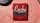
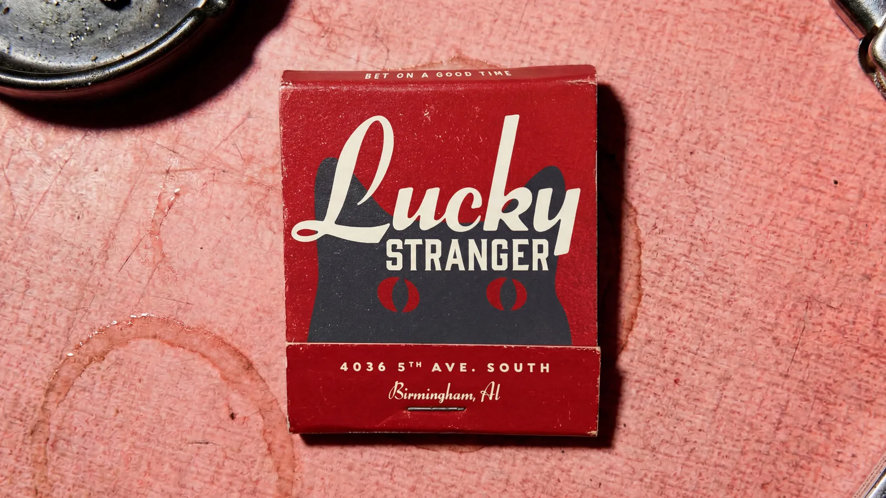
Lucky Stranger
Creative direction, brand identity and merch at Big Sis Creative Studio
In a popular area already full of personality, Lucky Stranger needed to stand out while staying true to the spirit of what they were building. As the newest bar in Birmingham's Avondale neighborhood, the vision was to make Lucky Stranger feel welcoming and a little worn in, like it had been there for years. Through my co-owned creative studio, Big Sis, I developed the full brand identity, including the logo, color and type systems, menus and merch.
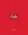
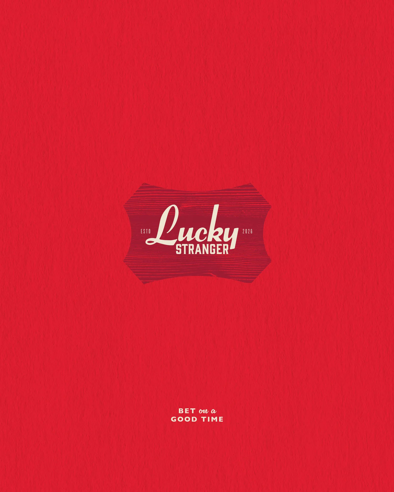
Logo design
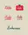
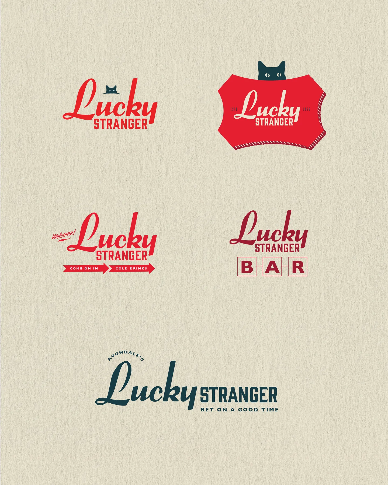
Logo system
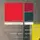
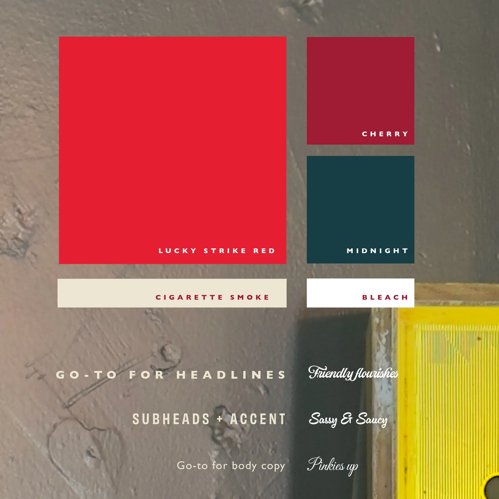
Type and color
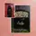
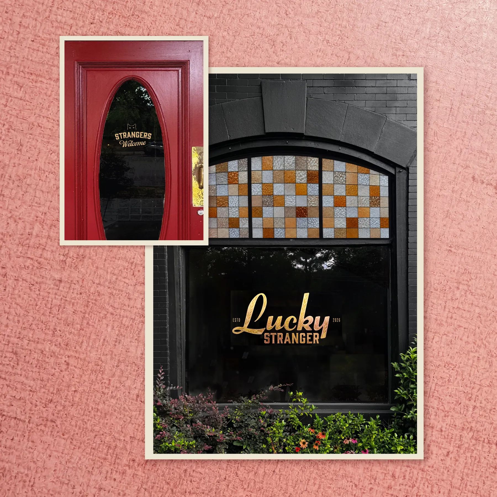
Exterior signage
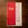
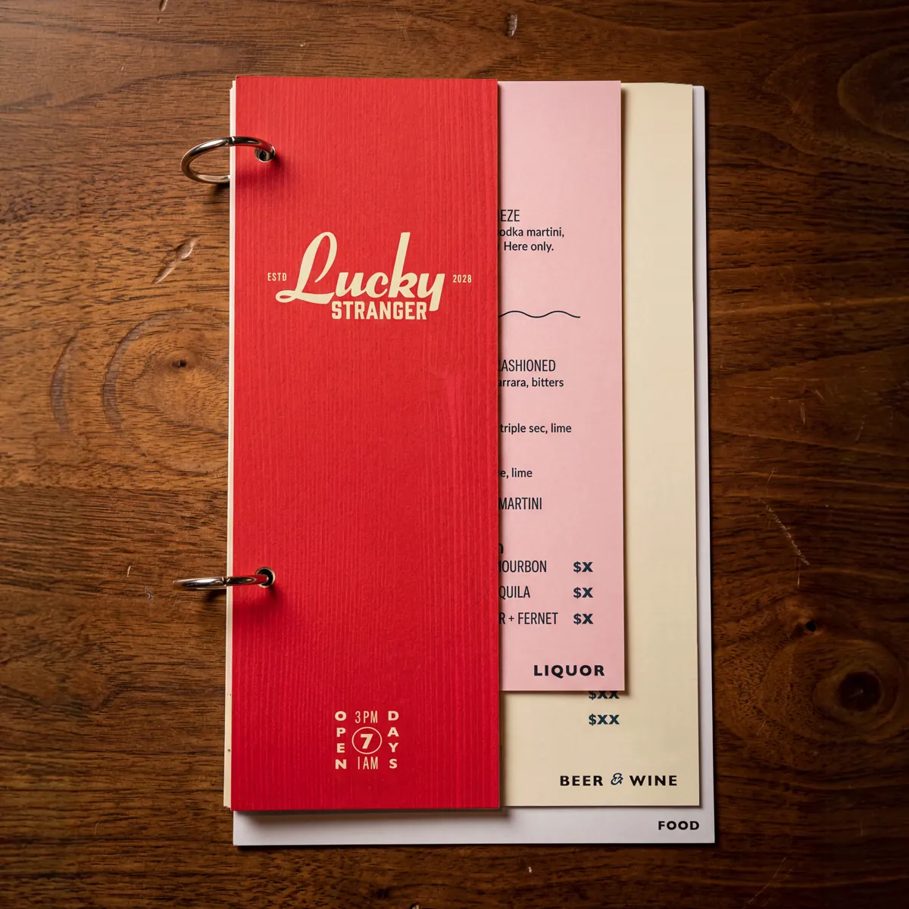
Menu design
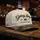
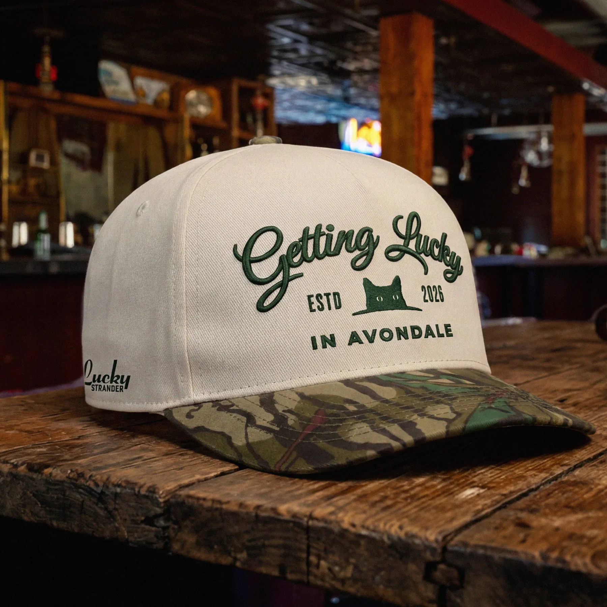
Merch: the hat
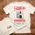
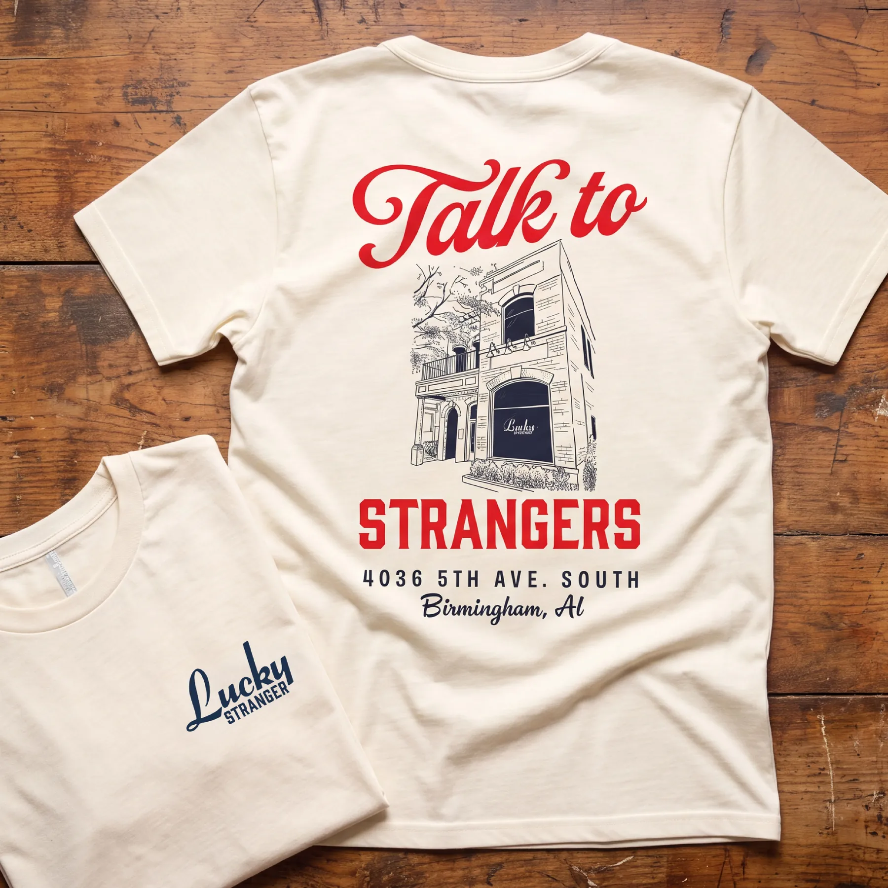
Merch: T-shirt
Click, swipe or use arrow keys